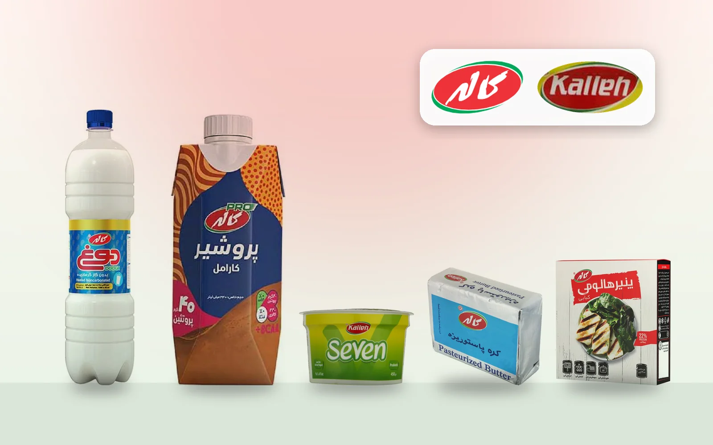
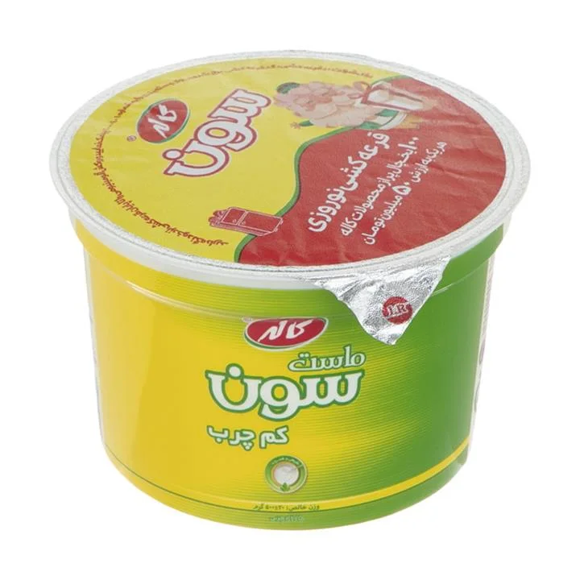
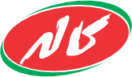

کالهKalleh
از آمل تا بازارهای منطقه؛ یکی از شناختهشدهترین برندهای لبنی ایرانFrom Amol to regional markets: one of Iran's best-known dairy brands
- تأسیسFounded
- ۱۳۷۰ (۱۹۹۱)1991[1]
- پایگاهBased in
- آمل، مازندرانAmol, Mazandaran[1]
- گروه مادرParent group
- گروه سولیکوSolico Group[1]
- محصول اصلیMain products
- پنیر، شیر، ماست و نوشیدنی لبنیCheese, milk, yogurt, dairy drinks[3]
در یک نگاهAt a glance
کاله سال ۱۳۷۰ در آمل شروع شد؛ با پنج خط تولید برای شیر پاستوریزه، شیر استریل، پنیر، بستنی و سس. این برند امروز چهرهی لبنی گروه سولیکو است و از مزرعه تا توزیع، زنجیرهی خودش را دارد. ما این پرونده را با هم دنبال میکنیم: هر عدد کنار منبعش آمده و هرجا عددی تأیید نشد، همان را هم گفتهایم.Kalleh began in Amol in 1991 with five product lines: pasteurised milk, UHT milk, cheese, ice cream and sauces. Today it is the dairy face of Solico Group, with its own chain from farm to distribution. We are following this record together with you: each figure sits next to its source, and where a figure could not be confirmed, we say so.[1][6]
بنیانگذارFounder
غلامعلی سلیمانیGholamali Soleimani
بنیانگذار گروه سولیکوFounder, Solico Group
متولد ۱۳۲۵ در آمل. در سالهای دانشجویی کسبوکار کوچکی در تولید همبرگر راه انداخت و سال ۱۳۵۷ کارگاهی در زیرزمین همان ساختمانی که هنوز دفتر گروه است باز کرد. سال ۱۳۷۰ با تأسیس کاله وارد صنعت لبنیات شد.Born in 1946 in Amol. He started a small hamburger business as a student, and in 1978 opened a workshop in the basement of the building that still houses the group's office. In 1991 he entered dairy by founding Kalleh.[1][2]
به زبان عددIn numbers
- بیش از ۲٬۰۰۰ تن2,000+ tonsشیر دریافتی در هر روز، کارخانهی آملof milk received per day at the Amol plantگفتهی خود شرکتCompany statement مصاحبه بدون تاریخUndated interview[4]
- ۲۸۰ میلیون دلار$280 millionصادرات محصولات گروه سولیکوSolico Group product exportsگزارش رسانهPress report منتشرشده در ۱۴۰۰؛ سال عدد ذکر نشدهPublished 2021; figure's year not stated[5]
- ۲۰۰ میلیون دلار$200 millionصادرات یکسالهی کاله، به گفتهی مدیر صادراتKalleh exports in one year, per its exports directorگفتهی خود شرکتCompany statement مصاحبه بدون تاریخUndated interview[4]
- حدود ۱۵٬۰۰۰ نفرAbout 15,000 peopleنیروی کار فعال گروهactive workforce across the groupگفتهی خود شرکتCompany statement بدون تاریخUndated[1]
- بیش از ۱٬۸۰۰ محصول1,800+ productsسبد محصولات گروه، نه فقط لبنیاتacross the group, not only dairyگفتهی خود شرکتCompany statement بدون تاریخUndated[2]
- بیش از ۲٬۲۰۰ کامیون2,200+ trucksناوگان توزیع گروهin the group's distribution fleetگفتهی خود شرکتCompany statement بدون تاریخUndated[2]
مسیرThe path so far[1]
- ۱۳۵۷1978کارگاه همبرگر در زیرزمین ساختمانی که هنوز دفتر گروه استA hamburger workshop opens in the basement of the building that still houses the office
- ۱۳۶۲1983تأسیس شرکت فراوردههای گوشتی آمل با ظرفیت ۲٬۰۰۰ تن در سالAmol Meat Products is founded, with capacity of 2,000 tons a year
- ۱۳۷۰1991تأسیس شرکت لبنیات کاله در آمل با پنج خط تولیدKalleh Amol Dairy Products is established with five product lines
- ۱۳۸۴2005تولید سس از کاله جدا میشود و شرکت مستقلی میگیردSauce production moves out of Kalleh into its own company
- ۱۳۸۵2006بخش بستنی هم مستقل میشودThe ice cream business becomes a separate company
- ۱۳۹۰2011شرکت توزیع سراسری گروه راه میافتدThe group's national distribution company is set up
- ۱۳۹۲2013کارخانهی لبنی کاله در نزدیکی شهریار تولید شیر در ظروف پلاستیکی را شروع میکندKalleh's dairy plant near Shahriar begins producing milk in plastic containers
بازارهای صادراتیExport markets
به گفتهی یکی از کارشناسان کنترل کیفیت شرکت در مهر ۱۴۰۴، سهم بزرگی از محصولات کاله به این چهار بازار میرود و از طریق دفاتر فروش خارجی به آمریکا هم ارسال میشود.A company quality-control specialist said in October 2025 that a large share of Kalleh's products goes to these four markets, with shipments to the US through its overseas sales offices.[6]
- ۷۳٫۵ میلیون دلار$73.5 millionپنیری که عراق در سال ۲۰۲۴ از ایران وارد کرد. این عدد مربوط به همهی شرکتهای ایرانی است، نه فقط کاله.of cheese imported by Iraq from Iran in 2024. This covers all Iranian companies, not Kalleh alone. آمار مستقل تجارتIndependent trade data[7]
دفترهای اعلامشدهی گروهGroup offices listed by the company
تهران، اربیل، بغداد، فرانکفورت، لسآنجلس، ازمیر و کابل؛ با دفتر مرکزی جهانی در اماراتTehran, Erbil, Baghdad, Frankfurt, Los Angeles, Izmir and Kabul, with a global head office in the UAE[2]
کاله در اروپاKalleh in Europe
گروه سولیکو از دفتری در فرانکفورت نام میبرد و یک فهرست غیررسمی، بریتانیا، اتریش و گرجستان را جزو بازارهای صادراتی آورده است. اما عددی برای صادرات کاله به اروپا پیدا نکردیم که بتوان آن را تأیید کرد. این بخش را با آمار رسمی شرکت کامل میکنیم.Solico lists an office in Frankfurt, and one unofficial directory names the UK, Austria and Georgia among its export markets. We did not find a figure for Kalleh's exports to Europe that could be confirmed. We will complete this section with official company figures.[2][8]
هنوز تأیید نشدهNot yet confirmed
- رقم صادرات کاله به اروپا و سهم هر کشور
- رقم تازهی صادرات؛ عددهای بالا قدیمیاند و بعضی تاریخ ندارند
- تعداد کشورهای مقصد؛ منابع از ۱۰ تا ۱۸ کشور گفتهاند
- تعداد کارکنان؛ منابع از ۱۴٬۰۰۰ تا ۱۷٬۰۰۰ نفر گفتهاند
- Kalleh's exports to Europe, and each country's share
- A current export figure; those above are old and some are undated
- The number of destination countries; sources range from 10 to 18
- Headcount; sources range from 14,000 to 17,000
منابعSources
- [1]Solico Group: A Brief History of Solico Group Companies
- [2]Solico Group: company website
- [3]Wikipedia: Kalleh Dairy
- [4]Donya-e-Eqtesad: interview with Kalleh's exports director
- [5]TechRasa Farsi: profile of Gholamali Soleimani (June 2021)
- [6]Iran Daily, 4 October 2025 (print edition, PDF)
- [7]Trading Economics, from UN Comtrade: Iraq imports from Iran, dairy and related
- [8]Iran Brands Review: Kalleh (unofficial directory)
این پرونده بر پایهی منابع عمومی نوشته شده و شرکت پیش از انتشار آن را بازبینی نکرده است.This record is based on public sources and was not reviewed by the company before publication.
آخرین بررسی:Last checked: ۱۲ آبان ۱۴۰۵3 November 2026